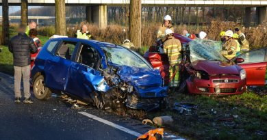
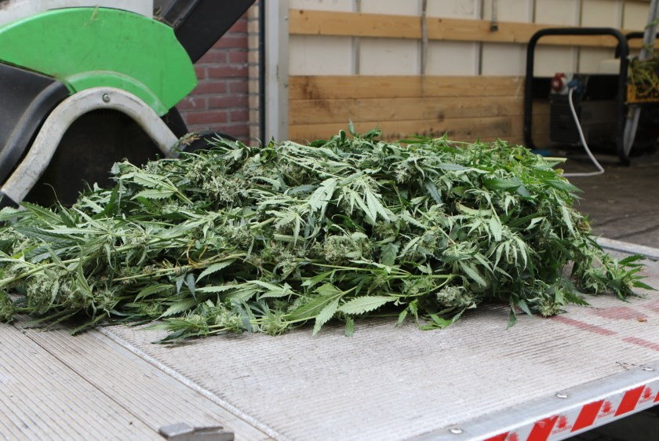

Nieuws uit Almere Buiten

Bij een aanrijding op de Tussenring zijn maandagochtend twee personen gewond geraakt. Door de ernst van het
ongeval hebben de hulpdiensten veel middelen ingezet. De weg is lange tijd afgesloten geweest.
De aanrijding vond plaats op de rijbaan richting de Hogering, vlak voor het spoorviaduct. De exacte
aanleiding is nog niet bekend, maar mogelijk is een voertuig uit de andere richting door de middenberm
gereden en frontaal op een tegenligger gebotst.
Er is door de hulpdiensten opgeschaald naar middel-hulpverlening. Er werden meerdere brandweervoertuigen en
ambulances ingezet en het Mobiel Medisch Team uit Amsterdam kwam met de traumahelikopter ter plaatse om te
assisteren bij de verzorging van de slachtoffers. De weg werd door de politie afgezet tussen de Mondriaanweg
en de Vrijheidsdreef.
Een van de inzittenden moest door de brandweer uit het voertuig worden bevrijd, waarbij het dak moest worden
weggeknipt. Beide slachtoffers zijn naar een ziekenhuis gebracht.
De Verkeers Ongevallen Analyse van de politie heeft onderzoek gedaan, waarvoor de weg nog langere tijd
afgesloten is gebleven.
Donderdagmiddag is op bedrijventerrein Hogekant een hennepplantage ontdekt. De politie heeft één
persoon aangehouden.
De wijkagent rook bij een routinecontrole een wietlucht bij een bedrijfspand aan de Argonweg. Na onderzoek
werden in het pand in meerdere ruimtes een hennepplantage aangetroffen. Volgens een voorlichter van de
politie gaat het om een middelgrote plantage. Exacte
aantallen zijn nog niet bekend. De eigenaar van het
pand is aangehouden door de politie.
Een gespecialiseerd bedrijf is ter plaatse gekomen om de plantage te ontruimen en de aangetroffen planten te
vernietigen.Een van de zes mannen komt uit Geleen. De andere vijf hebben geen vaste woon- of
verblijfsplaats. De hennep wordt vernietigd.
Begin april werd bekend dat in Nederland steeds minder hennepkwekerijen ontdekt worden. In 2018 ging het om
3.913 kwekerijen tegenover 4.670 in 2017.
Het vernieuwde wegdek van de Louis Armstrongweg in de Almeerse Muziekwijk zorgt volgens omwonenden voor
veel geluidsoverlast. Ze hebben geklaagd bij de gemeente.
Het wegdek werd afgelopen zomer vernieuwd. Ook is een rotonde weggehaald, zodat het verkeer beter kan
doorstromen. Aan weerszijden van het nieuwe asfalt werden 'streetstrips', straatklinker-achtige stroken,
aangelegd. Rijdt een automobilist sneller over de strips dan is toegestaan, dan is er in de auto een harde
brom te horen. Zo wil de gemeente ervoor zorgen dat er minder snel wordt gereden.
Maar dat is volgens diverse omwonenden niet gelukt. "Die strips maken ook buiten de auto een enorme herrie",
zegt Loes Kompier. Zij woont in een appartementencomplex naast de Louis Armstrongweg. "Als je binnen zit,
lijkt het soms net of hier een Grand Prix wordt gereden.
 Zij woont met haar man Jan op de één na hoogste verdieping van het
wooncomplex. Het lawaai houdt ze geregeld wakker.
Zij woont met haar man Jan op de één na hoogste verdieping van het
wooncomplex. Het lawaai houdt ze geregeld wakker.